Quarto website 7: making a presentation
Creating a presentation with Quarto
1 Introduction
Today we are going to learn how to make a presentation using Quarto. We will go over how to:
- Create a Quarto presentation document
- Alter the YAMl to change your theming
- Create slides
Here you can find a demo presentation that will show you some of the options of things you can do in a Quarto presentation.
2 Create a Quarto presentation
Open the project that contains your website. Then go to File > New File > Quarto Presentation. We are going to render our prsentation into a Reveal JS format (kind of like the presentation equivalent of .html). This is an open source .html format for presentations. Since we’ve been using the visual markdown editor, check the box to use it now.
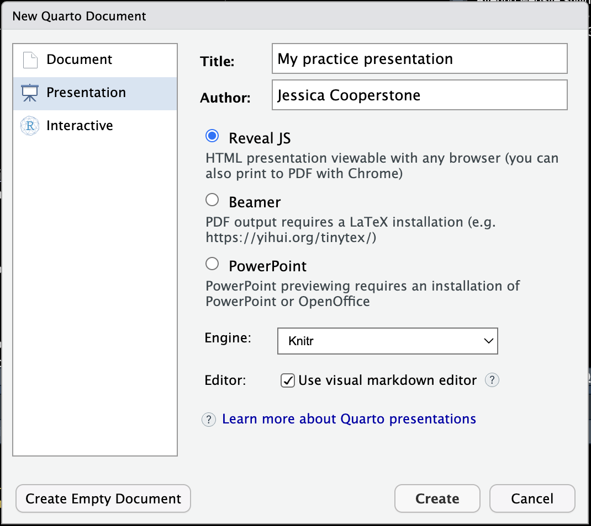
Save this file in your website directory.
3 The YAML
We will first look at the YAML.
title: "My practice presentation"
author: "Jessica Cooperstone"
format: revealjs
editor: visualLet’s render the .qmd file to see what it looks like.
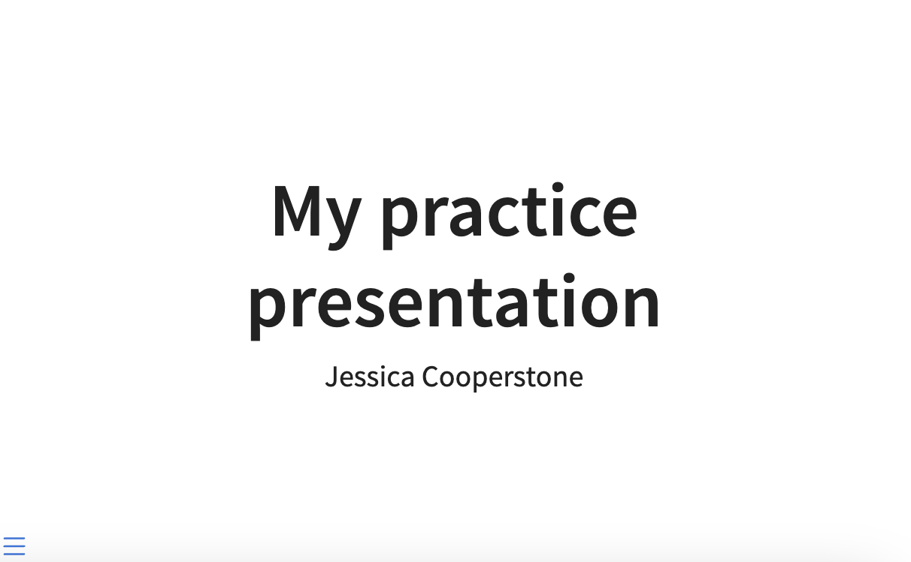
In your viewer, if you click on the hamburger in the bottom left corner, we can see:
- Slides: here we have our first slide, and an empty second slide
- Tools: which let’s us view the slides in different way, and export them as a pdf
- Close: which just gets us out of this view
We can adjust our YAML to change the themeing of our slides by setting key:value pairs under format. Here are some that I’ve set which renders like this:
title: "My practice presentation"
author: "Jessica Cooperstone"
format:
revealjs:
slide-number: true
logo: "img/my-image.png"
footer: "I ❤️ [Code Club](https://osu-codeclub.github.io/)"
theme: moon
echo: true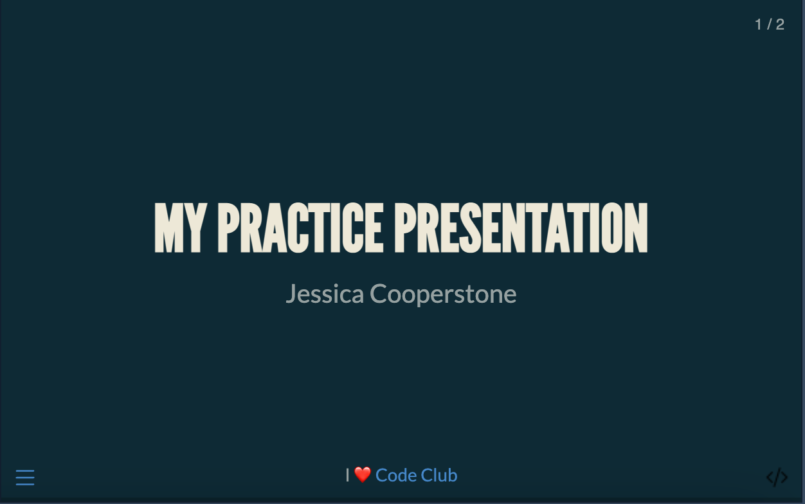
Just like there are
slide-numbercan betrueorfalse, and there are different formats of numbering to pick from.logoallows you to specify a logo which will appear on the bottom right of your slide, I’ve selected an image of the code slashfootersets a footer which appears in the middle of your slidesthemecan be set a preset themes for a presentation. Click here to see the full list. You can also set a theme by providing a.scss.file.echo: truemeans by default all code will be shown, this is the default
You can find the full list of all the options for revealjs here.
The settings of your YAML will inherit for your whole presentation, unless you override any options for an individual slide.
4 Creating slides
You can add a slide by creating a level 2 header (by using two hashtags), or if you’re in the visual editor, you can click on Normal > Header 2. This will insert a slide.
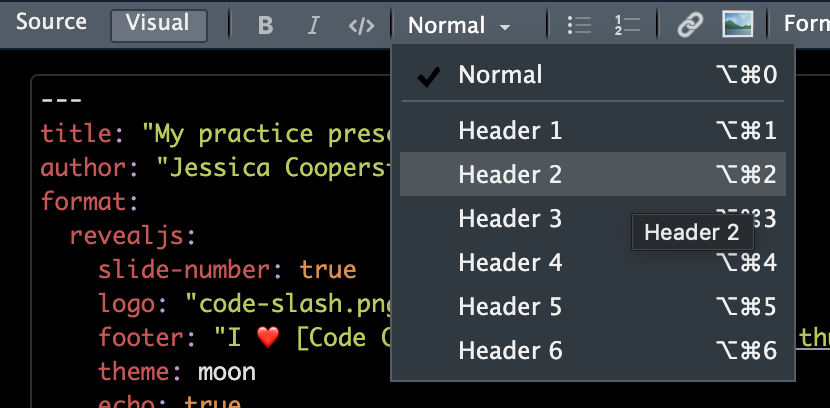
If we toggle back to Source you can see that just two ## have been added. You might find typing this easier than setting a Header 2.
What we type here in Heading 2 will be the title of our slide.
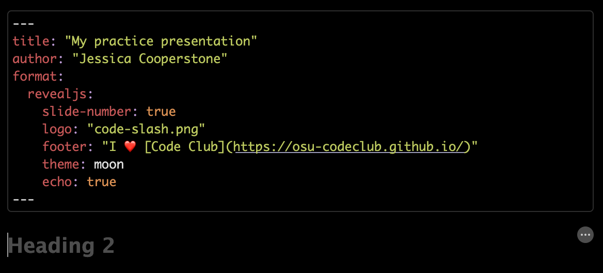
If you wanted to make a bulleted list, you can use the visual editor to insert bullets, and add some content.
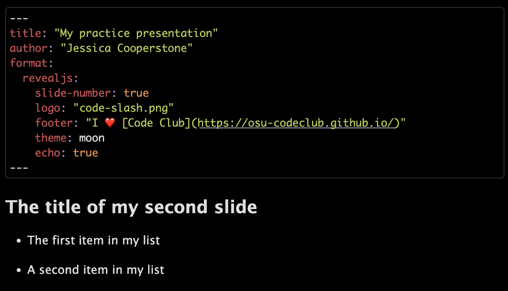
Try rendering this to see what happens.
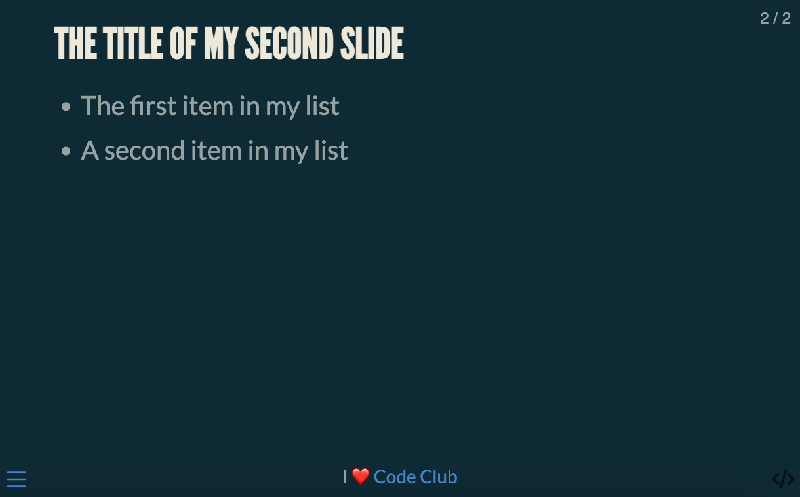
If you click back and forth in your viewer, you will see that both items in the bulleted list appear together. If you want bullets to populate one at a time, you can set incremental: true in your YAML, or if you just want the bullets to increment in this slide only, you can set it by clicking on the three dots on the right of your slide, and setting Classes to be .incremental. You can learn more about incremental lists here. If you toggle between the visual and source editor, you can see what code you’d need to type to get your bullets to be incremental.
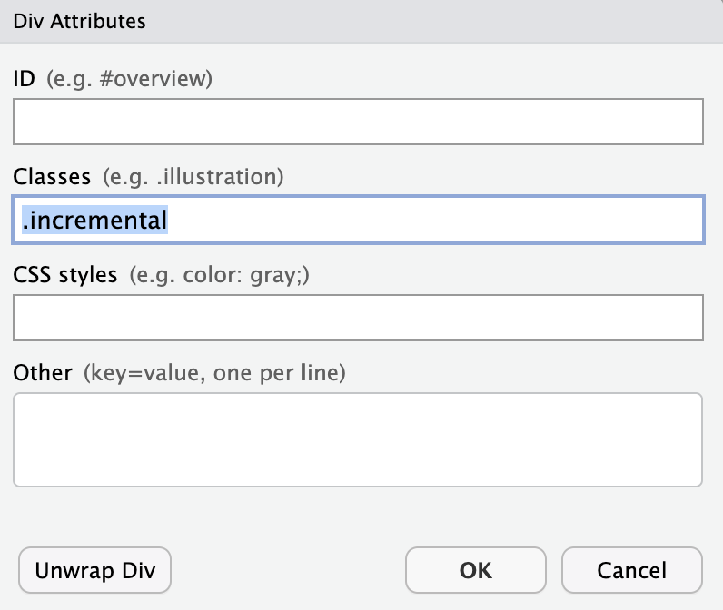
This is what your incremented slide would look like in the source editor.
## The title of my second slide
::: incremental
- The first item in my list
- A second item in my list
:::One of the main reasons you might want to create a Quarto presentation is because you want to show code. Just like we talked about last week, you can add a code chunk by clicking Insert > Executable cell > R to add an R code chunk.
You can type whatever code you want, here I am putting in some code that makes a plot. I am setting at the top of the chunk that I want the output to be on the next slide, since the code is a little long and the plot is a little big.
A the top of a code chunk, you can set the options for that chunk after #| at the top of that chunk.
#| output-location: slide
library(tidyverse)
library(palmerpenguins)
penguins %>%
ggplot(aes(x = species, y = flipper_length_mm, color = species)) +
geom_boxplot() +
geom_jitter() +
theme_minimal() +
theme(legend.position = "none") +
labs(x = "Penguin species",
y = "Flipper length, in mm",
title = "Penguin flipper length by species")When this renders, it looks like this:
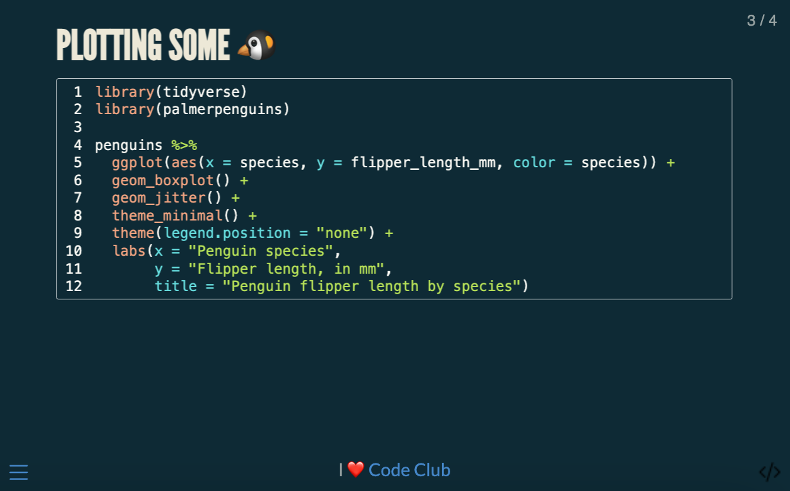
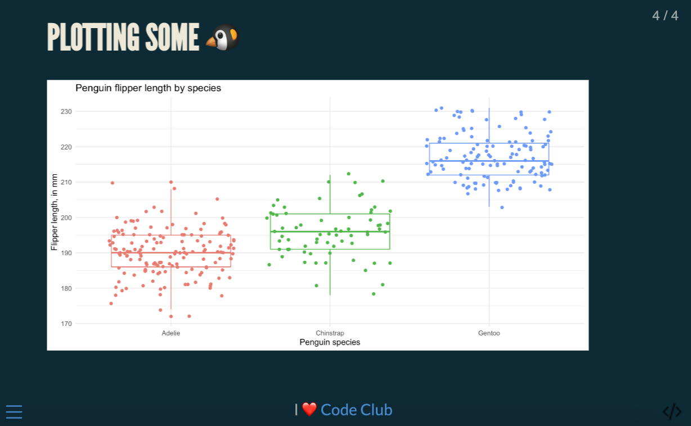
We can also make it so that the code is collapsable, like this:
#| code-fold: true
#| code-summary: "Click for the full code"
penguins %>%
ggplot(aes(x = species, y = flipper_length_mm, color = species)) +
geom_boxplot() +
geom_jitter() +
theme_minimal() +
theme(legend.position = "none") +
labs(x = "Penguin species",
y = "Flipper length, in mm",
title = "Penguin flipper length by species")When rendered, it looks like this:
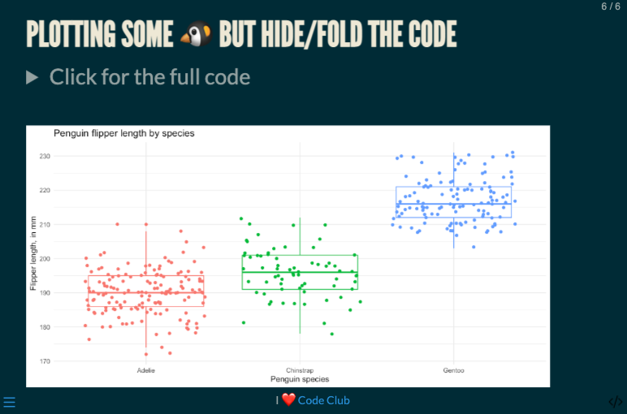